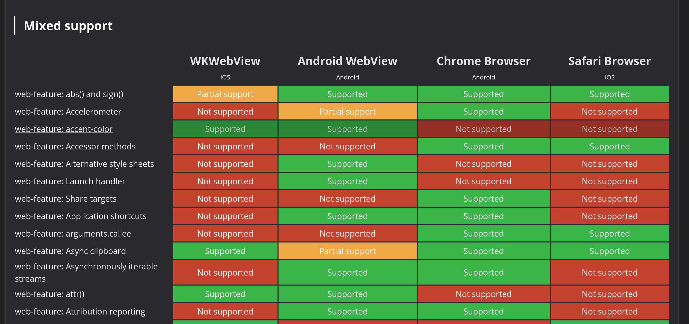

class: center, middle # State of WebViews - From compatibility, to security and beyond. ## Niklas Merz #### W3C WebView Community Group & Apache Cordova ??? * **Maintainer of Apache Cordova which uses WebViews for cross platform mobile apps** * Chair of the W3C WebView Community Group --- # Agenda 1. Overview 1. W3C WebView Community Group 1. The State of WebViews 1. Let's look at security 1. The future for WebViews & the community 1. Discussion ??? * Overview of the next few minutes * Catch you up on WebViews * Talk about the community * Focus on security * Think about the future of WebViews --- # Why? * Learn * Connect communities * Security in the age of AI & CRA * Security is everyones problem * The AI part ??? Why am I here? Learn more about Super apps and security there Find out how WebViews are used **Dan's advice coming together & documentation** Find out what is done differently compared to web Connect communities AI usage --- # What is a WebView? [W3C WebView Community Group](https://www.w3.org/community/webview/) > Software components that are used to render Web technology-based content outside of a Web browser (Native Apps, MiniApps, etc). [User Agent finding from W3C TAG](https://www.w3.org/TR/user-agents/) > As software components, user agents can be parts of larger applications and can call libraries that implement the web platform or parts of it. ??? * WebView Community Group at W3C * Long discussion on specifics * Essentially embedding of web content in native apps --- # A Super App is a User Agent > User agents include both web browsers and other intermediaries between end-users and the web. Each user agent serves its user, not any of the other constituencies. A user agent owes its user various duties, which are established through collective discussions and embodied in the various standards that user agents implement. ??? * Mentioned user agent finding by TAG * Good to remind everyone * It should follow the duties and serve its users --- class: center, middle # [Types of WebViews](https://webview-cg.github.io/usage-and-challenges/#types-of-webviews) ## Fully fledged vs browser-like Tradeoff between control, capabilities, and security ## Provided by the operating system vs bundled Tradeoff between regular updates, consistency, and performance ??? * Defined in our usage and challenges report * Criteria: UX flexibility, access to web content, state sharing --- # Why do I care about WebViews? * App developer * Cordova Hacker * Cordova Maintainer * WebView Community Group Member * WebView Community Group Chair ??? * Got in touch with WebViews many years ago * Got to solve some interesting challenges with them * With the WebView CG I see opportunities to make a difference --- # Why you should care about WebViews > WebViews are more than just a bridge between native and web. They are a critical component of many digital user experiences today. https://blog.merzlabs.com/posts/care-about-webviews/ * In-app-browsing * Super Apps * AI generated applications * A true cross platform enabler ??? * Critical component for many apps you might use * Easily used without noticing * Exposed to security risks * In app browsing * Used for mini apps in some form or not * The web is the best cross platform technology we have --- # W3C WebView Community Group > The WebViews Community Group aims to identify, understand and reduce the issues arising from the use of software components MiniApps Working Group recently closed and interested parties are encouraged to join the WebView Community Group. Please join us! ??? Introduction & invitation --- # State of WebViews * Mobile WebViews * Android WebView, iOS WKWebView and more * **Mini apps** * Hybrid: Apache Cordova, Capacitor etc. * Desktop WebViews * Microsoft Edge WebView2 * macOS WKWebView * Linux WebViews (WebKitGTK, QtWebEngine) * Hybrid: Electron, Tauri * ...more embedding of the web ??? * Lots of different WebViews out there * Very different use cases and capabilities * Some are for browser like experiences * Some are for building apps or parts of apps * **Fragmentation is a big issue** * **WebViews are provided by the OS and just used by apps or frameworks** --- # Pain points for developers * Inconsistent support for web features * Platform-specific APIs that basically do the same thing differently * Loading files from the app bundle * Cookie handling * Permissions * Security easily done wrong ??? **Difference in behavior and support for web features** * native APIs * hard to find out support for new features or nuances of the **web-features** * Documentation lacking from experience in Cordova * Security awareness * Security easily done wrong --- # Compatibility - caniwebview.com ### A place for docs and web feature support * Writing behavioral docs is hard * We still need to gather more information * Previous focus was on compatibility data * **Testing apps & tools** * Adding security explicitely to our scope ??? * We started the idea of caniwebview with writing down behavioral docs * Then also figured out we can easily track web feature support but it's not displayed anywhere * Adapted tools used for browsers like BCD, web-features and Baseline * Built and published testing apps --- # Some features may not be available in WebViews <p></p> ??? **Everything is supported like in the browser except when it's not** * Service Workers on WKWebView are restricted to App Bound Domains --- # WebViews can be configured differently * Disable JavaScript * Limit navigation * No permission UI * Storage & state sharing --- # The host app has control over the web content * JavaScript insertion and execution * Network requests can be intercepted and modified * Cookies and storage can be accessed and modified * CSS can be modified * Granting permissions --- # Learnings * Compatibility tools are very helpful * BCD (Browser Compatibility Data) * Web-Features * Baseline * Build a place to share documentation, guides and best practices * Provide tools for testing * Figure out gaps and similarities * Martin Alavarez presented [research](https://espinr.github.io/talks/2025/1112-Modular-Web-Engines-TPAC/) * Finding paths to standardization is hard ??? **I'd like to share some learnings for other communities to adopt** * People appreciate caniwebview to check references * Tools and docs help writers, testers, implementers * Finding one thing where people can spend time and money on is hard * If you have found paths to standardization, share them with me --- class: center, middle # Security for WebViews --- # WebView Security gone wrong ## Cordova InAppBrowser Plugin * **Developers build cross-platform apps with Cordova and add plugins** * InAppBrowser plugin adds a second WebView to a Cordova app * Built before Custom Tabs & SFSafariViewController * WebView used for the wrong purpose ??? Great example from Cordova about WebView security Put web content in apps and call plugins with native features using JS We know it's not good, stil supported and widely used --- # Validation gone wrong ## CVE-2026-47430 - CVSS-B 9.5 CRITICAL The iOS implementation of cordova-plugin-inappbrowser passes the id field from a WKScriptMessage body to commandDelegate sendPluginResult:callbackId: with no format validation (CDVWKInAppBrowser.m:560–574). Any web content loaded inside the InAppBrowser can fire any pending Cordova callback in the host app by posting a message whose id field is a guessable or enumerated callback identifier. An attack abusing this weakness must be tailored to the specific plugins and callback IDs the host app uses. Though an attacker with knowledge of common Cordova plugin configurations could craft reusable payloads targeting widely-adopted plugins. ??? * In the code for 7 years * Validated only on the Android platform --- # Cordova plugins * Plugins register callbacks that get ids like InAppBrowser1234567 * Plugin framework uses ids to match between registered JS callbacks and native code * InAppBrowser registers one callback for its events (loadstart, loadstop, exit, …) plus one per executeScript/insertCSS call. --- # Forgotten validation in InAppBrowser * `window.webkit.messageHandlers.cordova_iab.postMessage` can be executed within a IAB WebView * Android has some validation to allow only InAppBrowser callbacks not arbitrary ones * No validation code was added for WKWebView * Theoretically guessing callback ids of other plugins is possible * Attackers could gain access to pending callbacks ??? Fun fact Phonegap, Callback, Cordova Easy fix, easy to forget **This type of issue could be many applications of WebView** --- # Security at WebView CG * Added to the [charter](https://github.com/WebView-CG/charter/commit/294c7a6a8403e37d3a95f5ca4f3358460ebba9b7) * [The WebView Basic Guide](https://caniwebview.com/guide) * [Draft Security Guidance](https://webview-cg.github.io/webview-security/) * Threat modeling with W3C threat modeling group * Working on documentation and best practices ??? **New workstream for WebView CG, security is everywhere these days** * It's hard to figure out how to use WebViews securely * We just got started with security in WebView CG * I drafted some guides for users and developers --- # The Basics * Choose the right type of WebView * Limit navigation * Disable unnecessary features * Handle permissions carefully * **Secure the native bridge!** --- # [How WebViews diverge](https://webview-cg.github.io/webview-security/) Documention on how WebViews diverge conceptually from security concepts, user agent duties and practices defined for browsers. * [User Agents](https://www.w3.org/TR/user-agents/) * [Web Platform Design Principles](https://www.w3.org/TR/design-principles/) * [Threat Model for the Web](https://www.w3.org/TR/threat-model-web/) --- class: center, middle # The simple picture [Start with a diagram](https://www.w3.org/TR/threat-model-web/#web-browser-threat-model)  ??? **We need a better diagram** * Normally the user is in control of permissions, here it's the host app * The host interacts with JS & storage unlike browsers --- # Modern Web Guidance > Modern Web Guidance is a set of skills that embed web platform expertise, best practices, and browser compatibility data directly into your coding agents. [https://developer.chrome.com/docs/modern-web-guidance](https://developer.chrome.com/docs/modern-web-guidance) ??? Tooling released by Chrome inspiration for WebView and MiniApps --- # Security focus * Practical advice * Documentation & tooling to help users and developers * Help developers to build for WebViews securely * **Highlight room for improvement** * Identify gaps between implementation * Highlight what could be addressed by providers * Work towards potential standards ??? **Just like for compatibility** --- class: center, middle # Beyond --- # Accessibility * WebViews might introduce additional barriers for assistive technology * Super Apps & Mini Apps buitl with accessibility in mind? * Mobile Accessibility Task Force ??? Another topic to raise because we got in touch at TPAC Haven't looked at the accessibility support in WebViews in detail yet --- # The Future of WebViews **Making a difference in WebViews, improves more than you think** * Security for browsing use * Performance & light-weight WebViews * Solving Mini App fragmentation? * AI-powered apps ??? * Fixing WebViews helps mini apps and more * AI is everywhere these days * **Embedding web component in AI usage** * No expert there but another current topic why webviews are important --- # The future of the community * WebView CG is open for Super Apps, Mini Apps and more * Connect with embedding * Form a new group at the W3C? * **Start with a small common goal to solve together** ??? Looking for formats to connect We see the need but it's hard to find common goals and investments --- # We need help! * Connect super apps and WebView community * Reporting challenges and issues * **Researching and documenting security** * Writing behavioral docs * Contribute ideas and ressources for standardization * Who wants to do contribute to thread modelling? ??? * **Educating on Super- & MiniApps** * Writing about WebView issues * Writing docs how webview **really work** * Joining discussions in the CG * Bring new ideas * Threat modelling --- class: center, middle # Discussion Are there paths to standardization? How to foster collaboration between WebViews, MiniApps, Super Apps and Embeeded? ??? * Let us know * What could create interest in standardization * Business values for standards and WebViews? --- .left-column[ ## Thanks! ] .right-column[ Get in touch: - Email: niklasmerz@apache.org - Mastodon: https://w3c.social/@niklasmerz This presentation: https://niklas.merz.dev/talks/state-of-webview-security ]